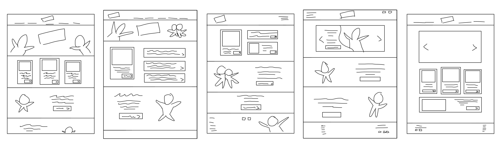
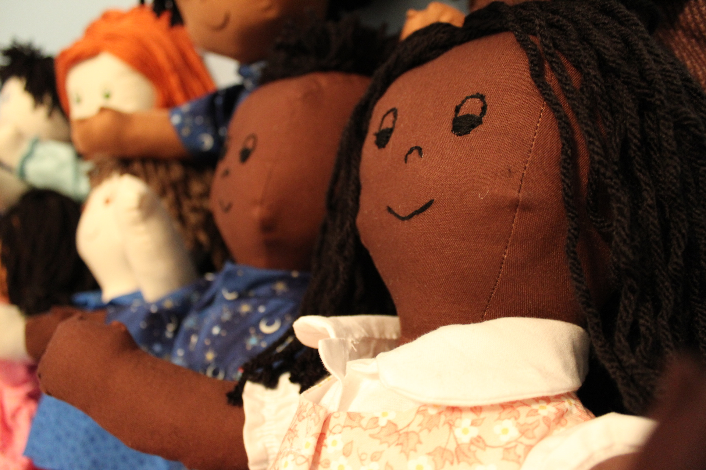
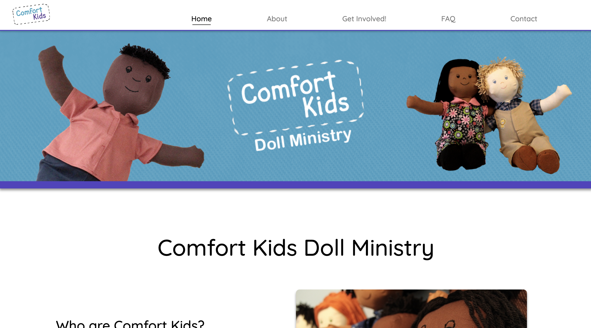
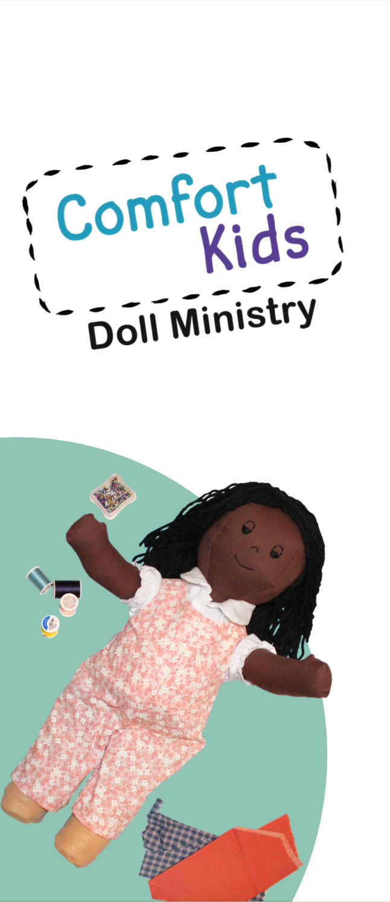
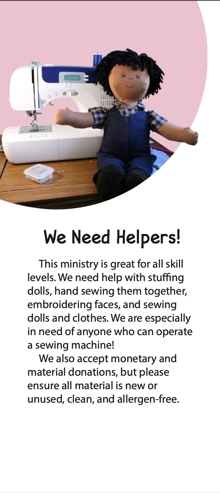
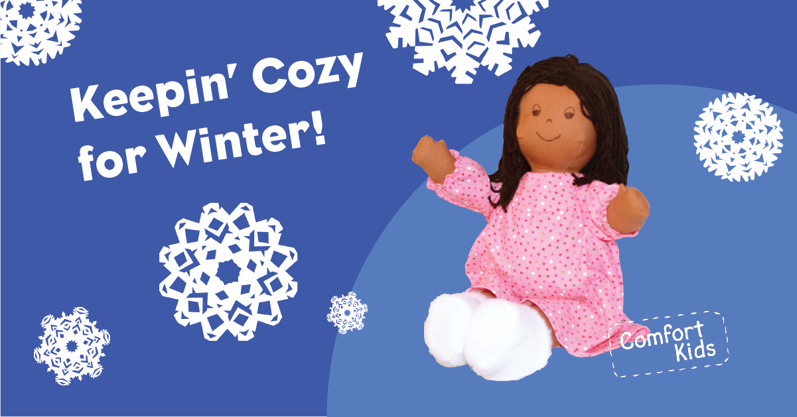
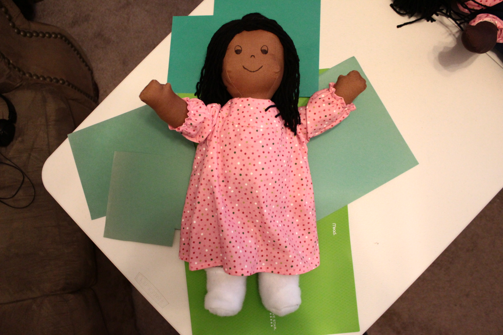
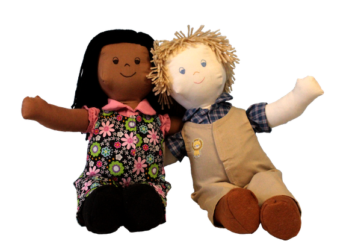

Designing a nonprofit for kids in need of a hug.

What started as needing community service hours for a class turned into a creative ministry to help children transitioning in foster care.

Comfort Kids
In December 2017, I was taking a service learning course and wanted to do something creative for the community. Angel Tree listed gifts that children in need wanted for Christmas, and one asked for a small coat and a black doll.
It was hard enough to find a non-white baby doll, but it was even harder trying to find a decent one that wasn't over my budget and didn't look like it just drank espresso. Then, inspiration struck; I could make a doll.
With the assistance of my mom (who knows more about sewing than I do), we made the first unofficial Comfort Kid. In just a few years, we have created more than 200 dolls for children in need of a friendly face and a big hug.
Web Design
Comfort Kids Website
The original website was the subject for my senior project in Web and Interactive Design. I utilized bootstrap and some whimsical GIFs of sewing, but I had since redesigned the site for better flow and functionality. I also took the opportunity to practice more with flexbox rather than relying on bootstrap.
Check out comfortkidsdollministry.org! >

Graphic Design
Creating the Logo
I wanted the logo to be friendly, but not too childish. I also wanted to incorporate some sewing themes, as well as make it look like a "mission". I decided to create a patch design with hand-drawn stitches and simple rounded fonts.
Earlier iterations of the color scheme included more colors like lime green and coral, but I simplified the colors to just teal and purple to give the site a more clean look. Purple and teal are friendly, but sophisticated, indicating that this is a fun project to help with a serious problem. Simplicity also helps when creating CSS variables to make sure that the styles remain consistent, especially if there are going to be changes in the future.
Designing the Dolls
I also had a hand at redesigning the doll faces. The original embroidery pattern for the dolls was a bit too antique and "Raggedy Ann" (in all fairness, the original pattern is older than I am), but I can definitely see where those faces might be creepy. I'm not a big doll fan myself, which is why I wanted to make sure that the Comfort Kids wouldn't be too upsetting for children.
I modified the face to something more open and cartoonish, with half-filled eyes, an upside-down 'u' nose, and a gentle smile. No dimples, freckles, eyelashes, or anything fancy. It doesn't take too much to fall into the uncanny valley, and I think this design is simple enough to remain friendly.


More materials
I also created a few materials for social media, pamphlets, and some designs used in the website.


As I didn't have a professional studio to take the pictures of the dolls, I had to get creative at times: propping them against white blankets, stacking books behind them so they'd stay upright, etc. I then went in photoshop to remove the backgrounds and add some simple vector backgrounds.
Comfort Kids
Comfort Kids is a fun project and has certainly had its share of bittersweet moments and stories. Although we've had to hold back on a lot of activities since COVID, as we wanted to reduce the risk of spreading the coronavirus or creating a health hazard for children, we still make dolls for DSS so that they may distribute them to foster children.
If you're interested in participating, be sure to visit the website for more information!
